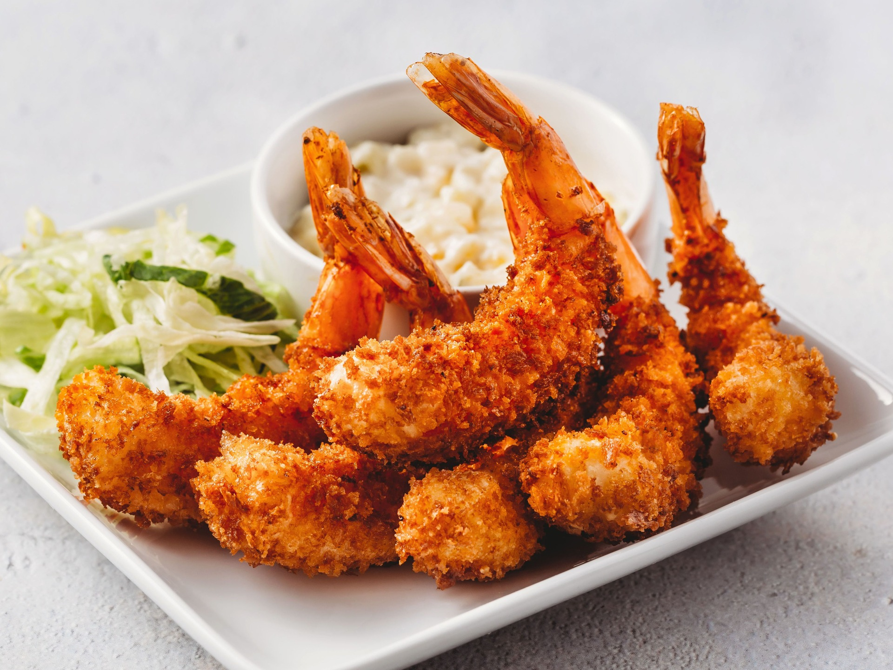

How to make a delicious Shrimp Fry!

Description
Ebi Fry is a Japanese fried shrimp made with succulent shrimp coated with Panko breadcrumbs and fried till golden brown. The preparation is similar to Tonkatsu and Korokke.
Ebi Fry is one of the most popular Yoshoku dishes. Yōshoku refers to a Japanese-style western dish, which originated during the Meiji Restoration between 1868 and early 1900.
Ingredients
- 12 large shrimp, deveined, tails on
- 1/4 cup all-purpose flour
- 1 large egg, gently beaten
- 1 cup panko breadcrumbs
- Canola oil, for frying
Steps
- Gather the ingredients.
- Clean shrimp: remove shells from shrimp without removing tails. (If shrimp have not been deveined, simply cut a slit on the back of the shrimp to remove the black innards, using a toothpick to lift vein out.)
- Make a few incisions on the stomach side of the shrimp and lightly press the back of the shrimp to straighten it out. This will prevent shrimp from curling when cooked.
- Pat shrimp dry using paper towels.
- Set up a work station with three shallow dishes: place flour in the first, beaten egg in the second, and panko breadcrumbs in the last dish. Be sure to add a touch of salt and black pepper to the flour, which helps to add flavor to the ebi fry.
- First, dust the shrimp in flour lightly.
- Then, dip the flour coated shrimp in the egg wash.
- Finally, place the shrimp in the panko dish and make sure that the shrimp is coated completely with panko bread crumbs.
- In a deep pan, heat oil to about 340 to 360 degrees F. Set up large plate or platter covered with paper towels to drain the shrimp after its been fried.
- Fry breaded shrimp until brown, turning over once, before moving shrimp to paper towel-covered plate to drain.
Return to top
Return to first page